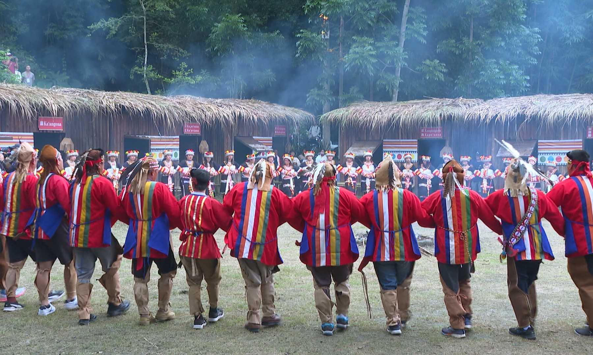
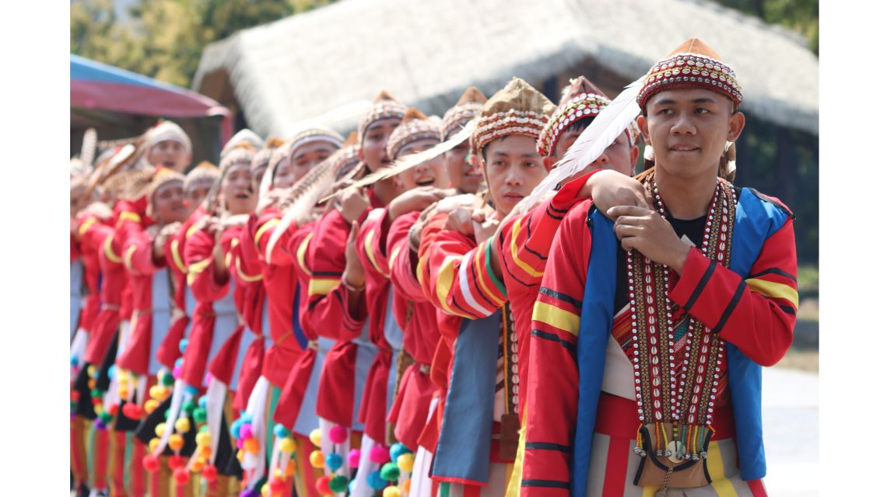

族群介紹
卡那卡那富族主要分布於高雄那瑪夏區，是台灣南島語系原住民族之一，與拉阿魯哇族關係密切。 族群人口較少，但擁有獨特的語言、祭儀、歌謠與社會組織文化。
傳統上以農耕、採集與狩獵為主要生活方式，對山林的知識與祭典文化完整地體現在族人的日常生活中。
地理位置
卡那卡那富族主要聚居於高雄市那瑪夏區與其部落周邊地區。
景點特色
| 地點名稱 | 地區 | 特色說明 |
|---|---|---|
| 那瑪夏部落 | 高雄市 | 卡那卡那富族與拉阿魯哇族共居地，保留完整祭儀文化與山林生活特色。 |
| 民權部落 | 高雄那瑪夏 | 部落文化保存地區，可了解族語、歌謠與編織文化。 |
飲食文化
| 食物名稱 | 主要材料 | 說明 |
|---|---|---|
| 小米料理 | 小米 | 祭典與慶典常見的重要糧食，象徵族人的祖靈文化。 |
| 野菜山產餐 | 山蘇、野菜、根莖 | 反映族人依山而生的飲食特色，強調自然採集。 |
照片與影片介紹
部落照片
 以上為卡那卡那富族的衣著特色。
影片介紹
以上為卡那卡那富族相關介紹影片。